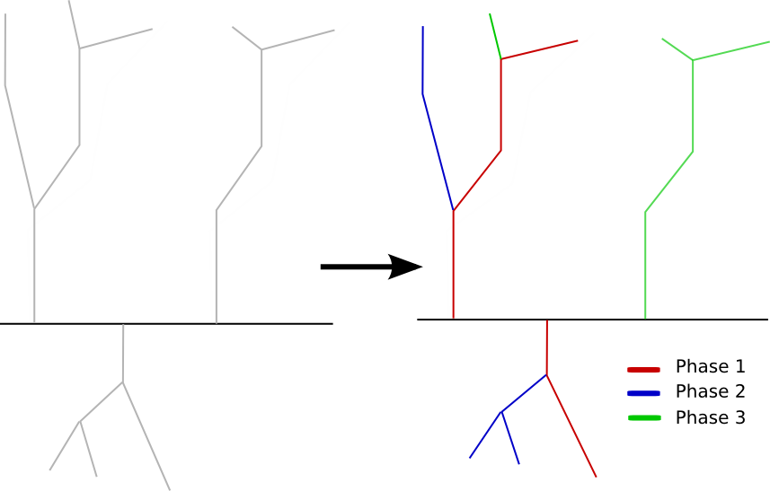

Sequencing
Introduction and Motivation
- Recap: NetworkPlanner produces a least cost electrification plan for a region
- How do we decompose and sequence that plan?

- Order is determined by combination of Network topology and financial viability
- Financial viability is determined by minimizing the following on a nodal basis:
$$\frac{\sum_{i=1}^{n} distance_{i}}{\sum_{i=1}^{n} demand_{i}}$$
Demo
Demo of Sequencer
Sequencing NetworkPlanner output with R
Sequencing with R